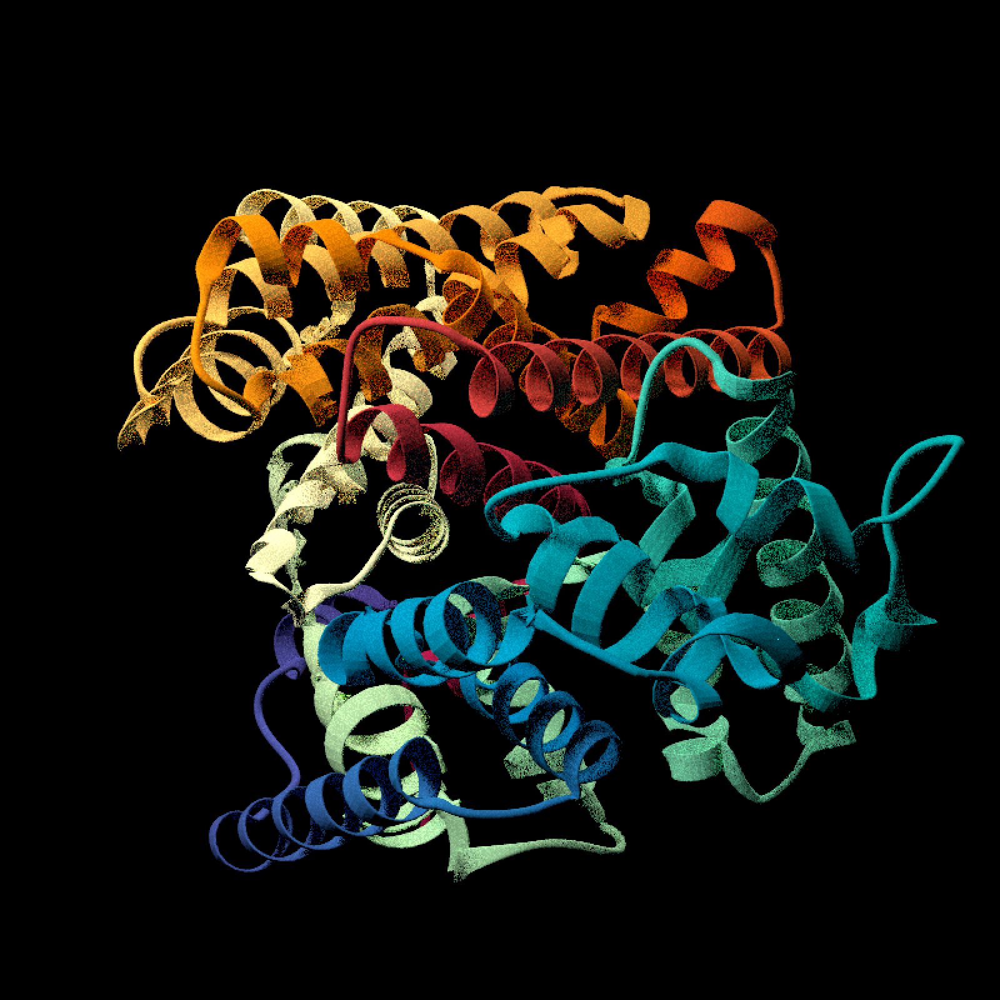
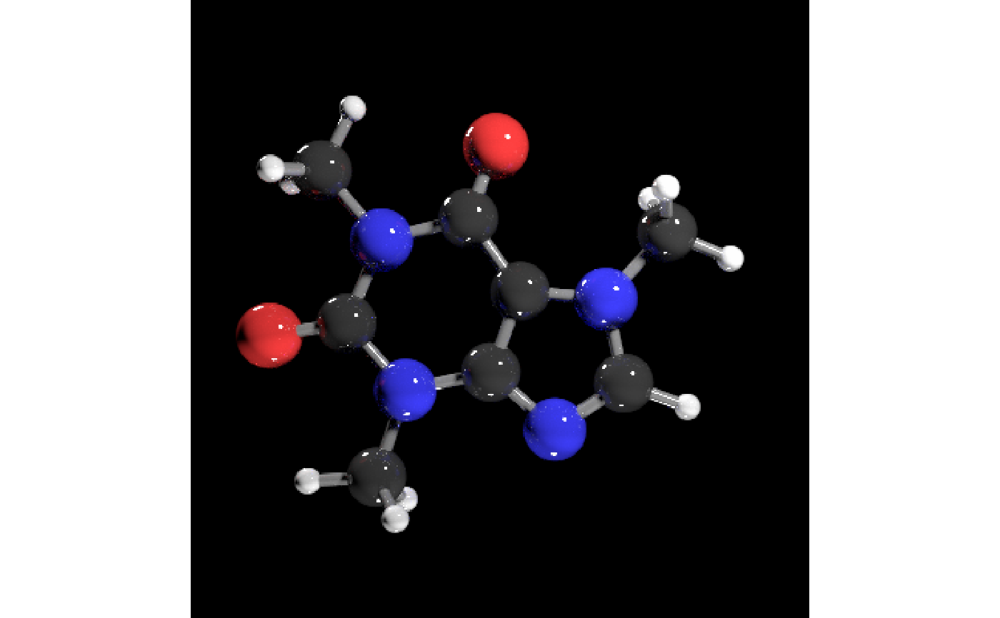
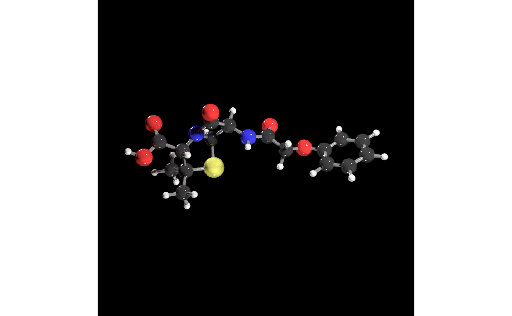
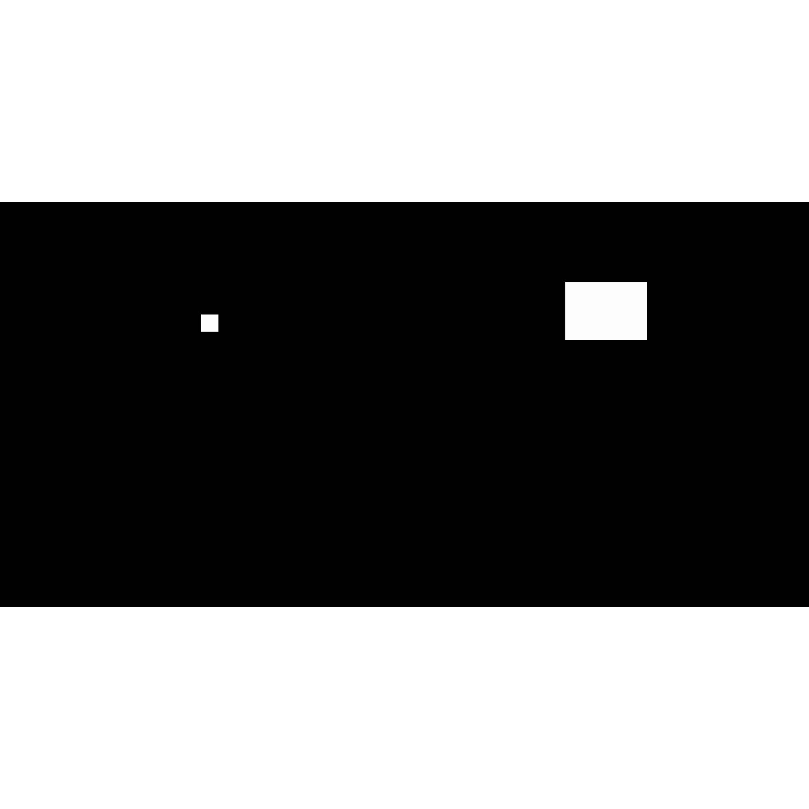
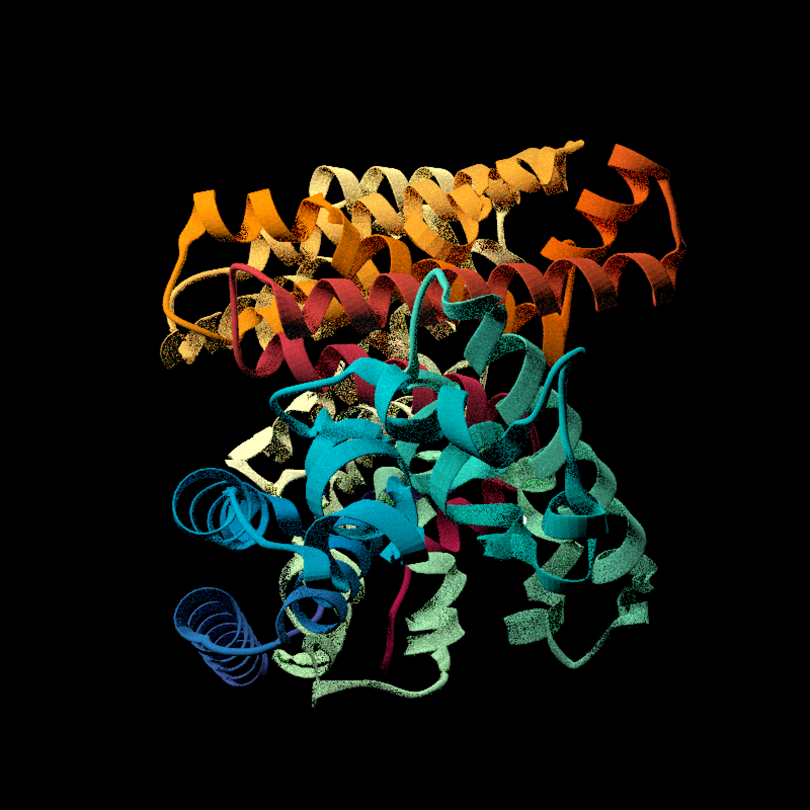
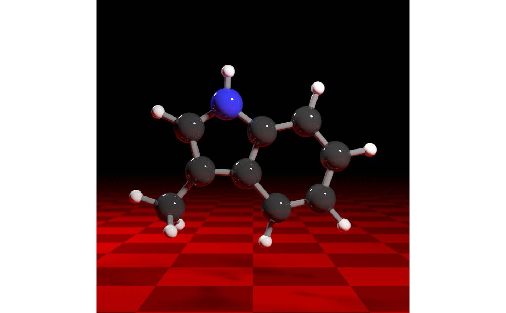
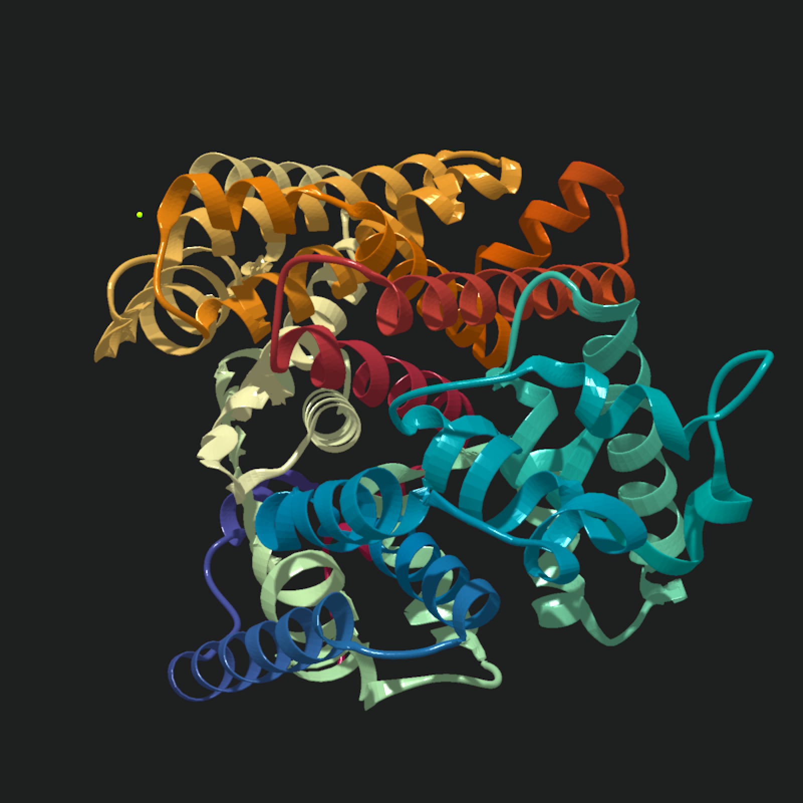

Automatically plots the molecule with a camera position and field of view that includes the full model. For more control over the scene, pass the scene to `rayrender::render_scene()` or `rayvertex::rasterize_scene()` and specify the camera position manually.
Raymesh scene of molecule model.
Default `800`. Image width in pixels.
Default `800`. Image height in pixels.
Default `NULL`, automatically calculated. Camera field of view.
Default `NULL`, automatically calculated as `c(0,0,0)`. Camera target point.
Default `NULL`, automatically calculated from the scene bounds. Camera position.
Default `c(0,0,0)`. Degrees to rotate the model around the X, Y, and Z axes. If this is a single number, it is interpreted as `c(0, angle, 0)` and only rotates around the Y axis.
Default `c(1,2,3)`. What order to apply the rotations specified in `angle`.
Default `top`. If `none`, removes all lights. If `bottom`, lights scene with light underneath model. If `both`, adds lights both above and below model. This can also be a matrix of light information generated with `rayvertex`.
Default `80`. Light intensity for pathtraced scenes.
Default `TRUE`. If `TRUE`, convert the raymesh scene to a `rayrender` raymesh and pathtrace it. Scene-generator rayrender materials are passed to `rayrender::raymesh_model()` with `override_material = TRUE` when available. If `FALSE`, rasterize the raymesh scene with `rayvertex`.
Default `TRUE`. If `TRUE`, plot the rendered image to the current graphics device. If `FALSE`, only return the rendered rayimage array.
Default `NULL`. Additional backend scene elements to add after automatic camera calculation and model rotation. For `pathtrace = TRUE`, elements may be rayrender scenes or rayvertex raymesh scenes. For `pathtrace = FALSE`, elements must be rayvertex raymesh scenes.
Other arguments to pass to `rayrender::render_scene()` or `rayvertex::rasterize_scene()`. Arguments that only apply to the other backend are ignored. For pathtraced scenes, `background` sets both `backgroundlow` and `backgroundhigh` in `rayrender::render_scene()` and turns on `ambient_light`. For raster scenes, `background` is passed through to `rayvertex::rasterize_scene()`.
Rendered image
compact_model = read_pdb(download_pdb("6k16", out_dir = tempdir()))
compact_scene = compact_model |>
generate_ribbon_scene(
material = rayrender::diffuse,
show_hetero_atoms = FALSE
)
# Start with render_model's default camera, top lighting, and calculated FOV.
compact_scene |>
render_model(pathtrace = TRUE, width = 800, height = 800, samples = 128)

# Use `plot = FALSE` when you want the image array without drawing it.
compact_image = compact_scene |>
render_model(
pathtrace = TRUE,
width = 800,
height = 800,
samples = 128,
plot = FALSE
)
# This render uses an explicit camera, scalar Y rotation, a solid
# background, weaker top light, and rayrender sampling options. The
# camera orientation was extracted interactively in rayrender by
# pressing the "P" key.
compact_scene |>
render_model(
pathtrace = TRUE,
width = 800,
height = 800,
fov = 72,
lookat = c(-1.93, 11.99, 8.47),
lookfrom = c(-25.50, 26.52, 14.99),
aperture = 2,
angle = 35,
background = "grey2",
lights = "top",
lightintensity = 50,
samples = 128,
sample_method = "sobol_blue",
clamp_value = 10
)

# Vector rotation and a custom rotation order show the same scene from a
# different orientation with lights above and below.
compact_scene |>
render_model(
pathtrace = TRUE,
angle = c(20, 90, 90),
lights = "both",
fov = 28,
samples = 128,
sample_method = "sobol_blue"
)

# Disable render_model's automatic lights and add your own.
tmp_exr = tempfile(fileext=".exr")
background_light = matrix(0,nrow=500,ncol=1000)
background_light[140:160, 250:270] = 700 #key
background_light[100:170, 200:300+500] = 10 #fill
rayimage::ray_write_image(background_light, tmp_exr)
#Generate a key and fill light
rayimage::plot_image(background_light)

compact_scene |>
render_model(
pathtrace = TRUE,
lights = "none",
background = "grey12",
samples = 128,
fov = 25,
sample_method = "sobol_blue",
rotate_env = 180,
environment_light = tmp_exr
)

# Extra rayrender scene elements can be added after the automatic camera and
# model rotation are set, which is useful for fixed reference marks.
compact_scene |>
render_model(
pathtrace = TRUE,
angle = 35,
scene_elements = rayrender::sphere(
x = -10,
y = -10,
z = -10,
radius = 0.5,
material = rayrender::light(intensity = 15)
),
samples = 128,
sample_method = "sobol_blue"
)

# Raster scenes use rayvertex lighting. This example passes a directional
# light matrix through render_model to rasterize_scene().
raster_scene = compact_model |>
generate_ribbon_scene()
raster_scene |>
render_model(
pathtrace = FALSE,
background = "grey12",
lights = rayvertex::directional_light(c(0.2, 1, -1))
)
